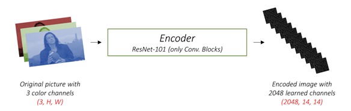
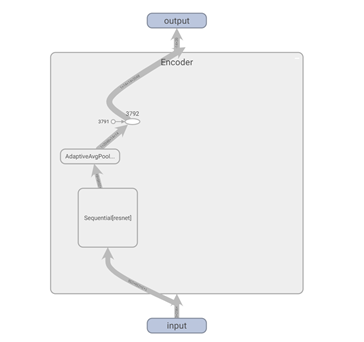
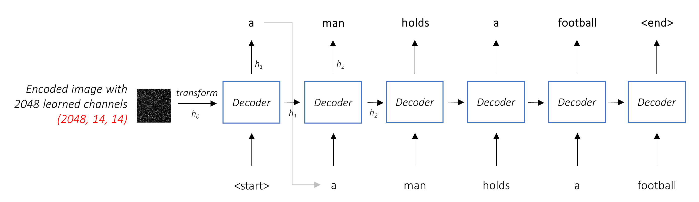
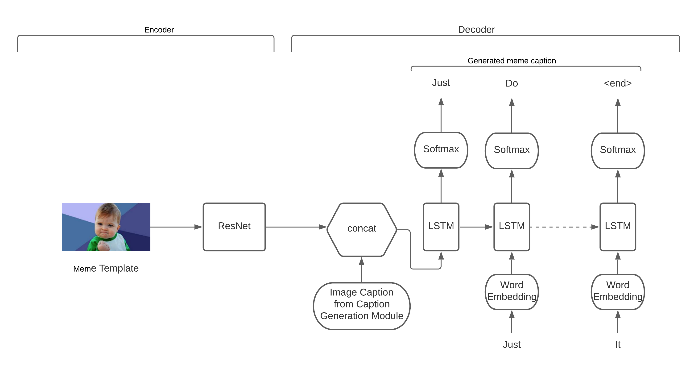
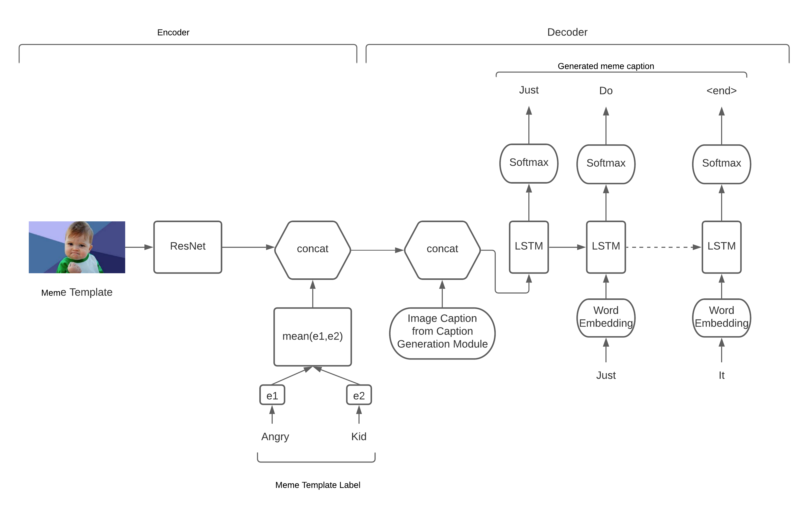

Inspired by the idea of internet image memes, this work introduces a novel automated
meme clip generation system. The system follows a probabilistic approach to generate a meme clip for
any given image using the ClipMe architecture. For a given image, a caption is extracted by a
attention-based deep-layer LSTM model that aids in the generation of a meme by combining a meme
template image and a meme caption employing an encoder-decoder model. This meme is mapped to
suitable audio to form the meme clip. The quality of the generated meme clip is assessed through
both automated and human evaluations.
1 Motivation
Internet image memes have become widely used by people on social media. Memes are
often viewed as a form of entertainment. A good meme can also be useful in advertisements, which
may make the content noticed and increase the click-through rate. Besides, funny audio is easy
to catch people’s attention, and we believe that it may bring more joy to the users. Therefore,
we introduce an idea to implement a deep neural network model to automatically generate
high-quality memes clips from images incorporating a meme and humorous audio to grab attention
and bring laughter to society.
2 Contributions
The state of the art methods focus on creating a humorous caption for the given
meme template or generation of memes based on textual input.
We propose a model architecture named ClipMe that generates a meme clip (meme with audio) from a
random input image. Our network will first extract an image description for the input image and
leverage a template selection network to select the best-matched meme template for the input
image. Then we will use this image description and the selected template to get a funny meme
caption and map the generated meme caption to the closest match funny audio.
To summarize our main contributions of our work include:
1.
ClipMe: Fusion of meme
template image, a humorous caption, and a suitable audio to create meme clips.
2.
Creation of customized dataset: Our
network is comprised of four modules where each has a different set of inputs and
outputs. To fine-tune our network, we propose to create a custom hand-engineered
dataset that includes
input image with image-caption mappings, caption-template mappings, template+caption
to meme mappings and meme to audio mappings.
3 Related Work
Automatic meme generation is a recent research field, and only a few authors have
worked in this field. The existing approaches treat the meme generation as a caption selection
or caption generation problem. The authors Wang and
Wen (2015) combined an image and its text description to
select a meme caption from a corpus-based on a ranking algorithm. The study by AbelL.Peirson and Tolunay (2018)
focused on extending Natural Language Description Generation to generating a meme caption using
an encoder-decoder model with attention (Luong et al. (2015))
mechanism. The study, Sadasivam et al. (2020)
implements a transformer based encoder-decoder model to generate a meme caption conditioned on
both the input sentence and the selected meme template.
Figure 1: Meme
Clip Generation via ClipMe (click me)
The input of the model as described in Fig 1 is a single raw image, and the caption generator
module outputs a caption y encoded as a sequence of
encoded
words.
Where
is the size of the vocabulary, and
is the length of the caption.
The caption
is mapped to a meme template encoding
using Bert sequence classification. This caption
and a meme template encoding
is passed through an encoder-decoder module to map the input to a humorous caption
.
The meme caption
is passed to audio mapping segment predicting an audio signal
to produce a meme clip combining meme template
, caption
, and audio
.
5 Dataset
For the image captioning module of ClipMe, the Microsoft COCO dataset will be
utilized. The dataset contains easily recognizable photos of 91 objects types with a total of
2.5 million labeled instances in 328k images.
To implement and validate the meme caption generator and meme template
selection module, we crawl and preprocess a large-scale meme dataset consisting of 900,000 meme
captions for 300 meme template images collected from MemeGenerator
website.
For adding humorous audios to the meme clip, two websites were crawled
namely, memebot.life and
the voicy network. A
collection of 1147 audio files has been built incorporating diverse labels.
6 Our Approach
A novel architecture is designed to generate meme clips, ClipMe comprising of four modules: Image Caption
Generation, Meme Template Selection, Meme Generation, and Audio Mapper.
6.1 Image Caption Generation
There are three components in our image caption generation model:
•
Encoder-Decoder
The encoder takes a colored image as input and converts it into a summarized representation
of the original image. We are using 101 layered Residual Network (He (2015))
trained on the ImageNet (Lin (2014)) classification task for decoding an
image. Architectures of the encoder are shown in 2 and 3.

Figure 2: High
level architecture of encoder model. ^1

Figure 3: Inner
architecture of encoder model with ResNet
The decoder takes encoded images as input and generates a caption
word by word. For generating the caption for the input image, we use LSTM as
shown in 4.

Figure 4: Decoder
model which generates word by word from the input image representation.
•
Attention
To estimate the importance of a certain part of an image, we need to be aware of the
sequence that is generated so far, so that we look at the image and decide what
needs describing next. The attention mechanism achieves the same. Attention used
in the model is soft, where the weights of the pixels add up to 1. If there are
P pixels in our encoded image and
is weight of that pixel, then at each timestep t,
follows Equation 1.
11footnotetext: Reprinted from https://github.com/sgrvinod/a-PyTorch-Tutorial-to-Image-Captioning.
(1)
•
Beam Search
Beam search uses top k candidates to generate sequences from which the sequence having
highest overall score is chosen.
Figure 5: Complete architecture of the model.^1
Figure 5
represents the complete encoder-decoder architecture with visual attention.
6.2 Meme Template Selection
Pre-trained language representation models have been popular for
language-related tasks. To map an input caption to a meme template, we fine-tuned models
like BERT, XLNet, and Roberta, followed by a linear neural network to get the template with
the maximum probability.
We also implemented the LSTM model to compare the results as mentioned in Table 2. For the LSTM model,
the input image caption is passed through an embedding layer to extract an embedding
followed by the LSTM for the classification task.
6.3 Meme Generation
A meme generation module consists of the following three sub modules:
Encoder
The motivation behind the encoder is to provide a meaningful state of the input to the
decoder to initiate the meme generation process. To capture the image embeddings, we utilize
the ResNet model trained using the ImageNet dataset. We employ an embedding layer consisting
of a Linear layer, BatchNorm layer, and a Dropout layer at the end. The last fully-connected
layer of the ResNet model is connected to the embedding layer.

Figure 6: Captioning without Meme Template Label
We have implemented and experimented with two different variants of the
proposed encoder scheme. The first variant as demonstrated in Figure 6 takes as input the meme template embedding
and image caption.
The second variant as demonstrated in Figure 7 of the encoder takes the meme template
label as well as meme template embedding and image caption as input.

Figure 7: Captioning with Meme Template Label
•
Decoder
The decoder consists of a uni-directional LSTM network. Every LSTM cell reuses the
variables in the model. The output from the encoder and image caption is used to
create a word embedding. These word embeddings are passed to LSTM. LSTM is run
over inputs to predict the next token at each timestep. We then utilize the
method of the beam search algorithm to create meaningful captions as described
below.
•
Inference and Beam Search
Meme caption generation is initiated via meme template embedding when for a single cell of
the LSTM network, softmax probability distributions are computed for the words
in the vocabulary. The output of an LSTM cell is fed sequentially into the next
cell to generate the next word. We use beam search with a temperature
hyper-parameter to filter top k scores where
is the beam size. We keep
outputs in memory at each time-step and sequentially compute their ”descendants”
resulting in
sentences with the overall highest score. Temperature hyper-parameter helps to
diverse outputs for the same template.
A probability distribution
can be modified with temperature
by the function
as demonstrated in Equation 2.
(2)
Where temperature
= 1 corresponds to unchanged probabilities, high
leads to a very flat distribution (random pick) and low
leads to argmax (greedy search).
6.4 Audio Mapper
Semantic Similarity is the task of determining how similar two sentences are,
in terms of what they mean. Transformer based models allow us to produce and achieve state
of the art results in semantic similarity with minimal task based fine tuning, which is
ideal for tasks with small training data.
The objective behind audio mapper is to achieve accurate semantic matching
between the generated meme caption and the audio labels from the labeled funny audio dataset
to find the most suitable audio file for the meme clip. We created a textual training corpus
from the audio labels, and a mapping file between labels and their respective audio files.
To find the most semantically similar audio for a input meme caption, we fine-tuned multiple
transformer based pretrained models, namely BERT (Jacob
Devin and Toutanova (2019)), RoBERTa (Liu and Stoyanov (2019)),
XLNet (Yang and V. Le (2019))
on the extracted corpus and calculated the semantic similarity between the meme caption and
audio label embeddings. This semantic textual similarity is measured via cosine-similarity
as illustrated in Equation 3.
(3)
7 Experiments and Evaluation
7.1 Image Caption Generation
To evaluate the model’s performance on the validation set (split into the
subsets defined by Karpathy and Fei-Fei (2014)), we will use the automated BiLingual Evaluation
Understudy (BLEU) evaluation metric as formulated in Equation 4 (Kishore Papineni and Zhu (2001)).
The metric evaluates a generated caption against reference caption(s).
(4)
where
is the modified precision for ngram, the base of log is the natural base e,
is weight between 0 and 1 for
and
, and BP as formulated in Equation 5) is the brevity penalty to penalize short
machine translations.
(5)
where
is the number of unigrams (length) in all the candidate sentences, and
is the best match lengths for each candidate sentence in the corpus.
BLEU-4 score of the model on MSCOCO (Lin
(2014))
dataset is shown in Table 1.
Beam Size
Validation BLEU-4
Test BLEU-4
1
29.98
30.28
2
32.95
33.06
5
33.17
33.29
Table 1: BLEU-4 scores indicating the model’s
performance for different beam sizes
Some examples of captions generated by the model and the visualization of the
attention component for each word in the caption is demonstrated in Fig 8.
Figure 8: Images with its attention at every step
of word generation and generated caption
test dataset - Accuracy
test dataset - Loss
# of templates
LSTM
BERT
LSTM
BERT
20
52%
65%
1.80
1.32
50
51%
63%
2.38
1.48
90
–
55%
–
1.88
300
–
40%
–
1.89
Table 2: Meme template selection module performance
on the test dataset using BERT and LSTM.
7.2 Meme template selection
After fine tuning different pre-trained language representation models (BERT,
XLNet, and Roberta) with a single neural network, we found BERT to outperform other models.
We have also experimented with word2vec embeddings for the meme template selection task.Our
dataset has 3000 captions for a template and split of 80,10,10 for training, validation and
testing respectively.
We trained the model for different number of templates to compare the
results as shown in the Table 2.
Since commonly used meme templates on social media are less in number and a single meme
template can convey multiple meanings, we have decided to use a model trained with 50
templates.
7.3 Meme caption generation
Experiments were conducted with and without labels as input to the LSTMs
employed for generating meme captions. In order to evaluate the meme captions generated two
metrics were utilized, the perplexity, and the hilarity as demonstrated in Table 3. The Perplexity (PP)
is a measure of the inverse probabilities of predicting the next word in the example caption
(C) formulated as Equation 6.
(6)
are the words in caption C.
The probabilities P can be found from the cross entropy loss calculated on the LSTM output.
Low perplexity means the model frequently assigns high probabilities to the given evaluation
example captions. This metric indicates the model’s performance on predicting captions for
images of different formats with the correct style. It is a limited metric for success as it
tells us nothing about whether the captions are humorous, original and varied.
For evaluating hilarity, we five team members have rated the level of correctness and
hilarity on a scale of 1 to 5 and averaged it out. We have sent out survey forms to other
students.
Model
Perplexity
Hilarity
Model without
meme template label names
2.42
3.24
Model with meme template label names
2.25
3.73
Table 3: Comparison of performance of the meme
generation module with and without labels.
7.4 Audio Mapper
Here we performed performance comparison analysis with multiple pre-trained
transformer based models, namely BERT (Jacob Devin
and Toutanova (2019)), RoBERTa (Liu and Stoyanov (2019)),
ALBERT (Lan and Soricut (2019))
and XLNet(Yang and V. Le (2019))
to generate accurate similarity scores between the generated meme caption and the funny
audio label dataset. We observed that a fine-tuned RoBERTa produces the most accurate
mappings between the meme and our extracted audio corpus. Training and fine tuning of the
network is done with a siamese or triplet network structure.
As depicted in Fig 1, the model first generates a meaningful caption
for the given input image. This caption is fed into the meme template selection module that
selects the best match meme template for the input caption. The selected meme template and the
image caption then acts as an input for Meme Caption Generator that generates a funny meme
caption. The funny meme caption is embedded in the meme template to create the final meme
embedded with a humorous audio matching the meme caption.
Table 4 shows a few
demonstrations of the output of the ClipMe architecture.
9 Remaining steps
We have developed and baselined all the individual modules. To enhance the
performance of our novel architecture, we decided to create a new custom dataset spanning the
entire project pipeline and fine-tune all modules on that data. The future tasks are as
follows:
•
Create a custom hand engineered dataset spanning the entire solution
pipeline, i.e. for each input image data will contain Image-caption mappings,
caption-template mappings, template+caption to meme mappings and meme to audio
mappings.
•
Fine tune the networks on the new dataset.
•
Experiment with different network hyperparameters and architectures to
optimize performance.
•
Explore new evaluation metrics to better benchmark our model
performance
10 Breakdown of individual contributions
•
Mehak Piplani
–
Brainstorming and coming up with the idea of doing a
project based on automated meme generation.
–
Brainstorming and bringing novelty to the project by the
concept of meme clip by incorporating audio to the meme.
–
Implementation of the Meme Generation Model
(encoder-decoder model with image captions and meme template embedding
and meme template label as input) and fine-tuning the model improving
the perplexity from 2.54 to 2.25.
–
Integration of the image caption generation module, the
audio mapper, and the meme generation module for inference and creation
of the custom dataset.
–
Implementation and Fine-tuning meme template selection
using models: RoBERTa and XLNet.
–
Brainstorming the idea of hilarity metric as the evaluation
metric of meme generation module and meme clip.
•
Shivam
–
Implementation of the Meme Generation Model
(encoder-decoder model with image captions and meme template embedding
as input) and fine-tuning the model improving the perplexity from 2.65
to 2.42.
–
Integration of Meme Template Module and Meme Generation
Module for inference and creation of the custom dataset.
–
Brainstorming and coming up with the idea of audio matching
module.
–
Brainstorming and implementation of Perplexity as the
evaluation metric for meme generation module.
–
Implementation of meme clip module which integrates meme
and relevant audio.
•
Rishabh Bansal
–
Developed and fine-tuned image to caption module
–
Developed audio mapper module and fine-tuned model on
extracted audio label corpus.
–
Ideated & formulated the novel idea to generate
template memes from visual inputs like images
–
Evaluation metric for image caption module.
–
Model benchmarking and selection in image to caption and
audio mapper module
•
Che-Pai Kung
–
Implementation and fine tuning Meme template selection
module using Bert and LSTM
–
Meme template crawling and building the dataset
–
Fine tuning of audio mapping model.
–
Data preparation for image captioning.
–
Creating survey design for hilarity metrix
•
Ravinarayana Adkathimar
–
Explored and evaluated different models like OSCAR and
models with different types of visual attention for Image
captioning.
–
Crawled 2 meme audio websites namely voicy.info and
memelife using selenium and created the dataset of around 1100 audio
clips.
–
Helped in fine tuning of the meme template selection module
with BERT pretrained model to increase the accuracy to 65.7%.
–
Setup project environment on github.
–
Developed inference module for image captioning and meme
template selection module.
References
K. He (2015)Deep residual learning for image recognition..
In arXiv,
Vol. 1512.
Cited by: 1st item.
A. Karpathy and L. Fei-Fei (2014)Deep visual-semantic alignments for generating image descriptions.
In CoRR,
Vol. abs.
Cited by: §7.1.
Z. Lan and R. Soricut (2019)ALBERT: a lite bert for self-supervised learning of language representations.
In ACL,
Vol. .
Cited by: §7.4.
T. Lin (2014)Microsoft coco: common objects in context..
In IBM Research Report,
Vol. ECCV.
Cited by: 1st item,
§7.1.
Y. Liu and V. Stoyanov (2019)RoBERTa: a robustly optimized bert pretraining approach.
In ACL,
Vol. .
Cited by: §6.4,
§7.4.
Z. Yang and Q. V. Le (2019)XLNet: generalized autoregressive pretraining for language understanding.
In ACL,
Vol. .
Cited by: §6.4,
§7.4.
V. AbelL.Peirson and E. Tolunay (2018)Dank learning: generating memes using deep neural networks.
ArXivabs/1806.04510.
Cited by: §3.
K. L. Jacob Devin and K. Toutanova (2019)BERT: pre-training of deep bidirectional transformers for language understanding.
In ACL,
Vol. RC22176.
Cited by: §6.4,
§7.4.
T. W. Kishore Papineni and W. Zhu (2001)BLEU: a method for automatic evaluation of machine translation.
In IBM Research Report,
Vol. RC22176.
Cited by: §7.1.
T. Luong, H. Pham, and C. D. Manning (2015)Effective approaches to attention-based neural machine translation.
In Proceedings of the 2015 Conference on Empirical Methods in Natural Language Processing,
Lisbon, Portugal, pp. 1412–1421.
External Links: Link,
DocumentCited by: §3.
A. Sadasivam, K. Gunasekar, H. Davulcu, and Y. Yang (2020)Cited by: §3.
W. Y. Wang and M. Wen (2015)I can has cheezburger? a nonparanormal approach to combining textual and visual information for predicting and generating popular meme descriptions.
In HLT-NAACL,
Cited by: §3.